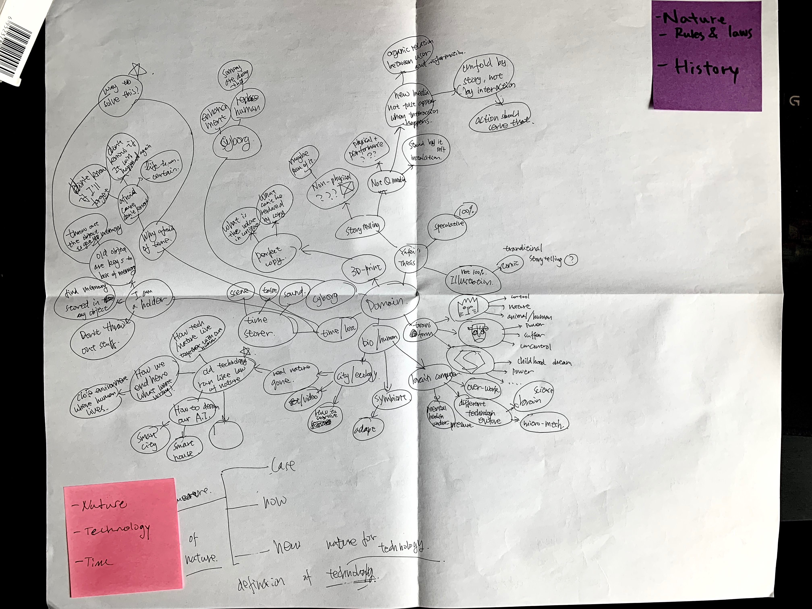
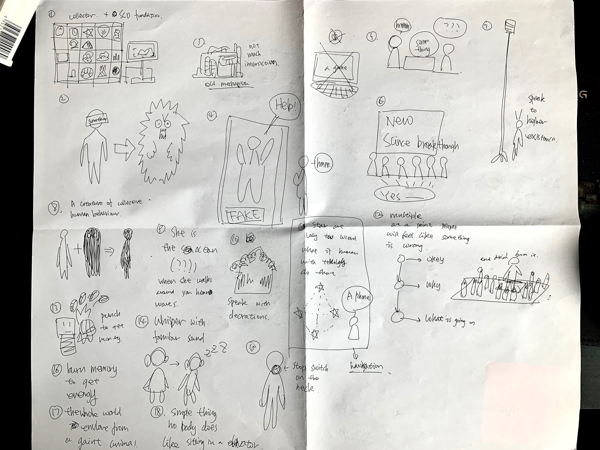
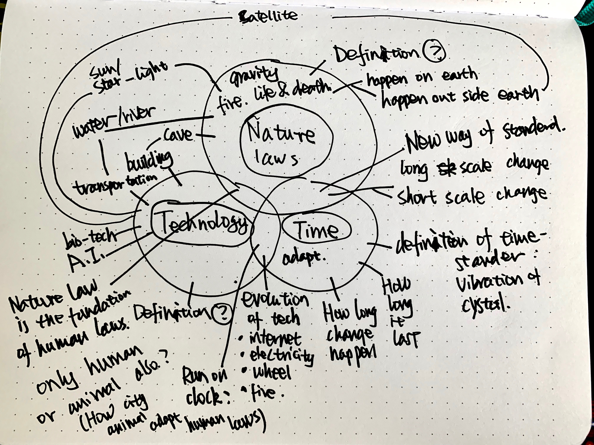

Week 1 Reflection
Post Documentation from class:
The first map is a mind map. I tried to think about the things I’m still not sure about. It started with things I’m already sure about (speculative and storytelling) but then I start thinking about domain that I been interested in and never got a chance to work with since I got in the program. Even though the domains come from some already existing ideas, I did came up with some sparks of idea that was new to me and I did found this surprising and exciting cause that was idea from mind mapping instead of coming up with scenario first.
For the second map I use drawing to show some scenario that could be part of my thesis. They showed either some domain that are too separate in map one or show some other aspect of a project like media or the way of showing or just the material used in the project.
To me I feel like the first map was super helpful. It make you just thinking about idea without worrying fully committing to one and there is just infinite potential. I feel like it’s a good way to test around ideas and followed by some brief prototype before deciding on the domain. The idea that excites me the most is the idea of technology evolving and becoming a self-maintain inclosed system that don’t required human operation anymore and after the exist or the civilization of human, those system just keep running and thus becoming part of the nature laws that the new life form on earth just have to know without understanding. I discussed this idea with Yue and Adam in class and got some positive feed back and during the discussion we talked about how part of our nature law could be part of the technology from the old life-form and then it just become a loop. I’m not sure if this will be my final idea to work with but it did strike me as a super interesting idea and I’m definitely doing more research on it.
I think the main problem I’m having is still when I try to work with already existed scenario it tend to become shallow and got limited by the detail of the scenario and if I got too attached to some detail in there I might lose focus on the bigger topic and related thinking that I should be doing.
New Map:
Base on the note I got from the discussion last Thursday I decided on three domain(for now): Nature Laws, Technology and Time. This map felt a bit weird cause most elements in there have at least connects to two of those domain.
Weekly Reflection:
For this week I feel kinda good about what I did cause I feel like I’m make progress deciding on my final domain and I do feel excited about what my thesis will be about. I just hope this kind of excitement could last a year.
The part that I’m kinda worried about is the second map. It felt like a lot of broken pieces that I don’t know how to put together or which piece to get rid of.
For the next week I feel like I have to do at least:
- Another mind-map only on domain. Try to go really deep and spend more time on it to see if there are interesting ideas on other domains or at least reduce amount of doubt I have on this idea.
- Another mind-map on myself to figure out a brief list of what I want to achieve with my thesis and if could, some law for myself to follow during the making of thesis project.
- Some draft of how this current idea could go. If could make some simple prototype to test it out.